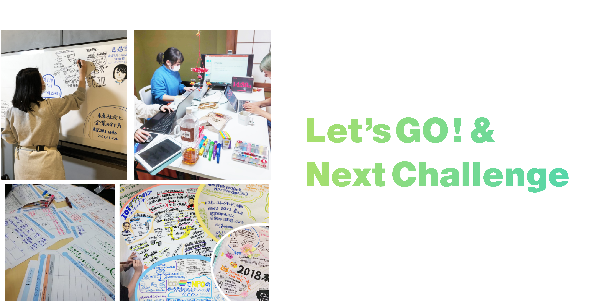
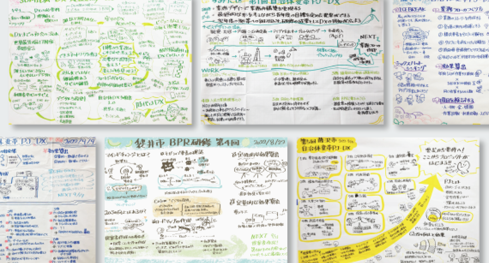

シビックテック・ラボで、チャレンジしませんか？


課題を構造から変えよう。
デザインの力を使い、
地域プロジェクトのプロとなる！
地域の過疎化・高齢化が進むこの時代、テクノロジーだけではなく、
価値の再構成をするデザインの力も求められています。
ただ課題を解決するだけでは、マイナスを０に戻しただけ。
現状からさらによくするにはどうしたらいいのか。
マイナスをプラスにまで持っていくにはどうしたらいいのか。
常に考え続ける必要があります。
時には課題の構造から考え直していくこともある。
そんなシビックテック・ラボで、
あなたも地域プロジェクトのプロになりませんか？
代表からのメッセージ
一般社団法人シビックテック・ラボ 代表理事 市川博之
常に考え、
課題解決と価値創出を。
学生時代、ボランティアや地域創生プロジェクトなどに参加したことはないだろうか？
いわばアマチュアだった学生時代。そこから”プロ”になるには、より規模の大きい、より複雑な課題にも取り組むことになる。
例えばシビックテックラボでは、自治体相手にプロジェクトを行うことが多くある。自治体は自分たちだけが良くなればいいわけではなく、市民を第一に考えながら多くの制約の中で課題解決をしなければならないのだ。
少しでも状況が違えば、答えは変わってくるはず。お客様とパートナーとして一緒に考え、ベストな解決策を見出していく必要がある。
さぁ私たちと一緒に、より良い価値を創造していかないか？
事業内容

UX/サービスデザイン
自治体職員自らがDXプロジェクトリーダーとなるためのマインドチェンジを促すため、実際の課題を題材に、伴走型・実践型のDX研修を行っています。また、自治体やNPO向けの各種計画の支援や、ビジョン策定からの施策の立案、サービスの立案といった上流工程から、開発・テスト・定着までのプロジェクトマネジメントまで、一気通貫で支援します。
ただのワークショップで終わらせず、本当に解決しなければならないものをクライアントと一緒に考え、突き詰めていきます。
ワークショップや場のデザイン
実際のプロトタイプ作成まで含めた、サービスデザインおよびデザイン思考研修を行なっています。作ることが目的ではなく、社会に実装して課題解決することを目的として考えていきます。
アイデアを考えるだけでは課題解決に結びつかない為、作り、使い、定着するまで一貫して伴走し、途切れることないサービスデザインを行います。
プロジェクトのデザイン
当社のワークショップでは、ただ漠然と人数を集めるのではなく、参加者と主催者が一丸となって課題解決に取り組める場づくりを行います。
また、ワークショップや対話の中で場の価値を高める為に、グラフィックレコーディング(通称グラレコ)を取り入れています。 グラレコとは、会議や講演など様々な議論をリアルタイムに可視化する手法です。当社では、ファシリテーションの１形態として、場に入ってリアルに描くグラレコを行っています。
Web制作/クリエイティブ制作
ハッカソンやアイデアソンなどのイベントをコンセプト設計から行なっています。 イベントでは、企画・運営から、ワークシートのデザイン、会場の装飾まで行うこともあります。
また、プロジェクトの一環としてWeb制作を行うこともあります。
デザインの役割
シビックテック・ラボでは、デザインを用いて課題解決と価値創出を目指していきます。デザインはその為の１つのツールとして利用するので、デザイナーであっても特定の業務のみ行うのではなく、それぞれの得意分野・領域に応じた業務をしながら、新たな分野にもチャレンジする必要があります。
一般的なデザインの専門職としての名称から、シビックテック・ラボで行うデザインについてどのような役割を担っているかを解説します。

サービスデザイン
クライアントワークや新規で自社で新規サービスを立ち上げる際に、リサーチやヒアリング〜制作までを行います。
時には業務内容の改善も含まれるため、クライアントの業務知識を身につけることや、クライアントのニーズの一歩先を見据えて、まだクライアントが気づいていない事に対しての提案をする力も必要となります。
必要になるスキル
顧客に対して新規価値と正しいことを企画、提案できる力。
UXデザイン
弊社の提供するサービスに関してのユーザー体験を分析し、ブラッシュアップを行います。
Webサイトやアプリケーション、業務システム、ワークショップや研修など現場での観察をもとに、シビックテック・ラボの次なるチャレンジと品質向上、価値創造に向けてどのようにするべきかを考えます。
必要になるスキル
多様性のある視点から課題を発見し、未来を想像する力。
ワークショップデザイン
人材育成や業務改革・課題解決をする際に、ワークショップを通して現状を認識し、解決案をメソトロジーを身につけます。
私たちが行うのは魚を釣ってクライアントに与えるのではなく、魚の釣り方を含めて手法を身につけてもらうことで、より多くの人が課題解決について考えることが出来るようになり、誰一人取り残されない社会が実現されると信じてメソトロジーを伝えます。
必要になるスキル
手法や思考を分かりやすく、納得出来るように言語・可視化する力。

ビジュアルデザイナー
情報伝達や思考、成果物を可視化する為にビジュアルを用います。
Webサイト、チラシ、イラストレーション、グラフィックレコーディング、写真、動画など様々な媒体でも表現を行います。
インハウスワークだけでなく、現場で表現されることも求められます。
必要になるスキル
情報をビジュアルを通じて多彩に表現できる力。
募集要項
| 雇用形態 | 正社員（試用期間3ヶ月） |
|---|---|
| 勤務時間 | 9:00-18:00（休憩時間 12:00-13:00）※状況に応じて変則的に対応することがあります。 |
| 休暇・休日 | 土日祝日、有給休暇（勤務半年後より）、産休・育休・病休・生理休暇など本人との面談によって取得可能。 |
| 勤務地 | 静岡県静岡市葵区新通り1丁目 最寄りバス停「本通り8丁目」 |
| 給与 | 月給 250,000〜（能力に応じて変動します） |
| 待遇・福利厚生 |
保険制度（雇用保険、労災保険、厚生年金、健康保険）
交通費または家賃補助 資格取得支援制度あり 服装自由 |
| 選考プロセス |
1.書類審査
2.適正検査
3.オンライン面接
|
インターンシップ

シビックテック・ラボでは、インターンシップも行っています。過去には、実際にシビックテックラボが行なっていた事業の課題に対して解決案を提案書を作成するというグループワークを行いました。 インターンシップの応募は、お問い合わせからご連絡ください。